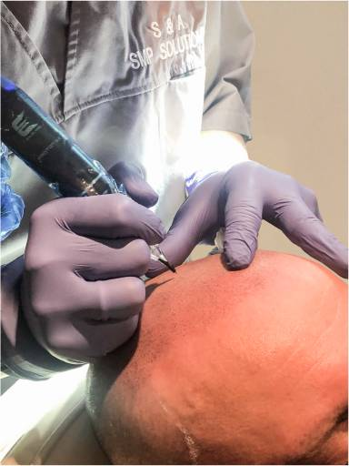
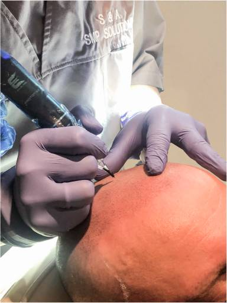
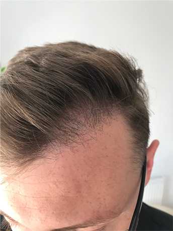
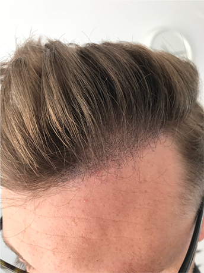
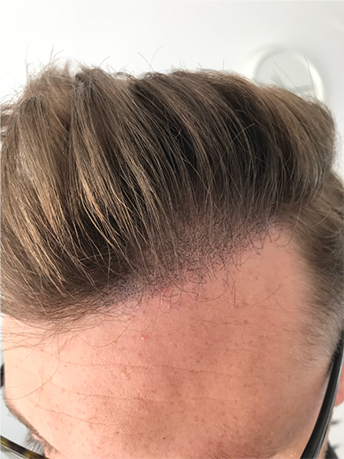

ABOUT US
S&A SMP SOLUTIONS was established to perform a Scalp micropigmentation to a high standard. Our practitioner, Stan, is fully trained and certified. Being in the Hair Transplant industry for over eight years, he has worked alongside high profile surgeons in the field and obtained a detailed knowledge in the aspects of hair loss solutions.
WHAT IS SCALP MICROPIGMENTATION
Scalp Micropigmentation is safe, non-surgical and non-invasive treatment, which is affordable solution for restoring confidence in both male and female individuals, who suffer from hair loss. Through detailed micro-needles, organic pigment is deposited at the epidermal level of the scalp, naturally replicating the appearance of real shaved hair follicle. This effect is 100% natural looking and is not recognizable as a hair simulation. By accurately replicating your own natural hair follicles and hair color, scalp micropigmentation can add density to thinning areas, creating an undetectable illusion of thicker, stronger and fuller hair. Further to that SMP is affordable solution for covering scars, received from previous hair transplant surgery or any other reason. In most cases, an SMP treatment lasts for three to five years before the patient needs to have another treatment done because of the fading of the pigments.
HOW LONG DOES THE TREATMENT TAKE?
Scalp micropigmentation treatments usually are split over three sessions, although the actual time can vary depending on the area treated, the style you require, and other factors. Typically the first session lasts from two to four hours, while the additional sessions usually take less time as the correct blend of density and darkness is achieved on the scalp.
 


DOES IT HURT?
Micro pigmentation is a non-invasive treatment, therefore there is very little or no pain experienced. It is possible the appearance of a mild skin redness, due to denser scalp nerve endings in some patients, which however should settle within a few hours following the treatment. There is no need for a special maintenance once treatments are complete. The procedure does not affect daily routine and activities. A complete aftercare guide is provided throughout the treatment sessions.
IS SMP JUST FOR MAN?
Scalp micropigmentation is suitable for both men and women however, there is a difference between SMP for men and women. Like men, women also can suffer from hair loss or thinning hair. In most of the cases however, women tend to lose hair evenly and is very unlikely that they go completely bald. SMP is used to restore the denser look of healthy hair and reduce the contrast between the scalp and the hairline in this case. While most of the male patients would require to shave down their hair prior to the treatment, this is not necessary for female patients. Instead, the practitioner applies pigmentation by parting the hair section by section.

COST OF TREATMENT
SMP price is strongly individual from person to person and depends on the area treated. Providing us with a photo of the concerned area is highly recommended to estimate the exact cost. Free phone consultation is also available.
An initial consultation may be booked for a detailed information and explanation at the cost of 20£, which will be fully refunded to you should you decide to book the complete treatment.
OUR CLIENTS
-

 

-
-